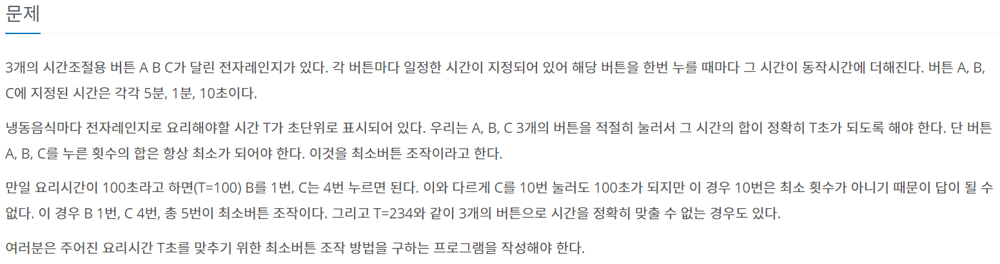
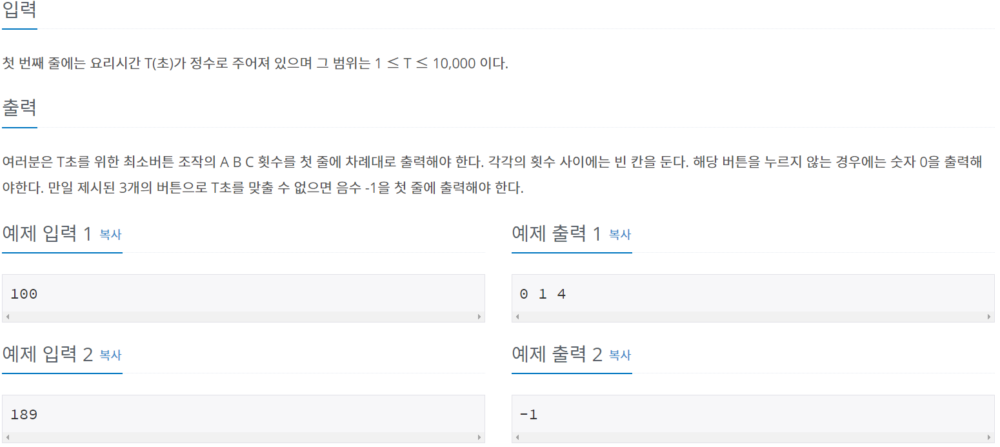

# 문제 정보
 
# 문제 분석
가장 대표적인 그리디 문제인 "거스름돈"과 거의 같은 문제이다.
주의 해야할 점이라면, 눌러야 할 버튼의 총 횟수를 출력하는 것이 아닌 각 버튼의 경우의 수를 출력해야 한다는 것과, 189초 와 같이 A(300초) B(60초) C(10초) 버튼을 이용해 딱 맞아 떨어지게 누르지 못하는 케이스는 "-1"을 출력해야 한다는 것만 조심하면 된다.
# 소스 코드 _ 1
#include <iostream>
using namespace std;
int T; // 요리시간(1<=T<=10000)
int ary[3] = {0 , 0 , 0}; // 눌러야할 각 최소 버튼의 수
int temp;
int main()
{
ios_base::sync_with_stdio(false);
cin.tie(NULL);
cin >> T;
temp = T / 300;
ary[0] += temp;
T = T - (temp*300);
temp = T / 60 ;
ary[1] += temp;
T = T - (60*temp);
temp = T / 10;
ary[2] += temp;
T = T - (10*temp);
if (T != 0)
cout << -1;
else
cout << ary[0] << " " << ary[1] << " " << ary[2];
return 0;
}
# 소스 코드 _ 2
#include <iostream>
using namespace std;
int n;
int main()
{
cin >> n;
if (n % 10 != 0)
cout << -1;
else
cout << n / 300 << " " << (n % 300) / 60 << " " << (n % 60) / 10;
return 0;
}